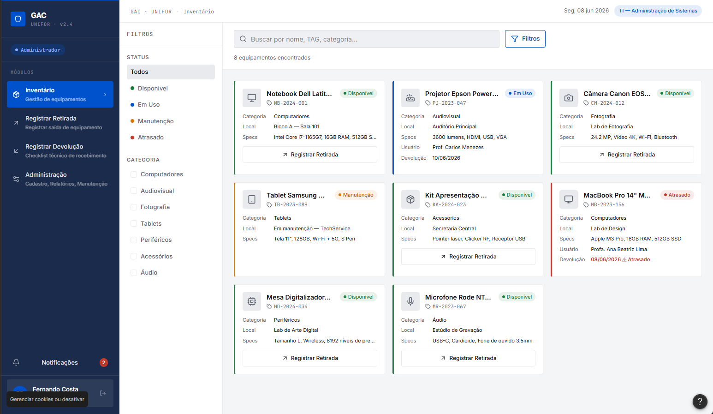
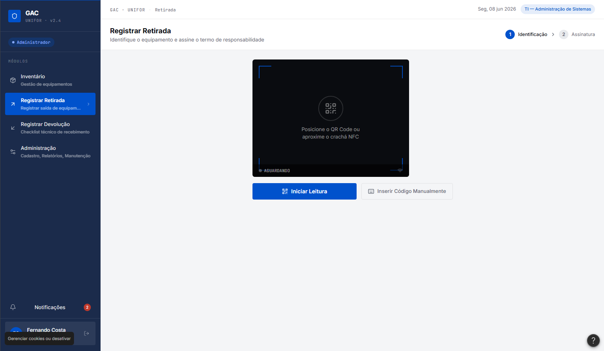
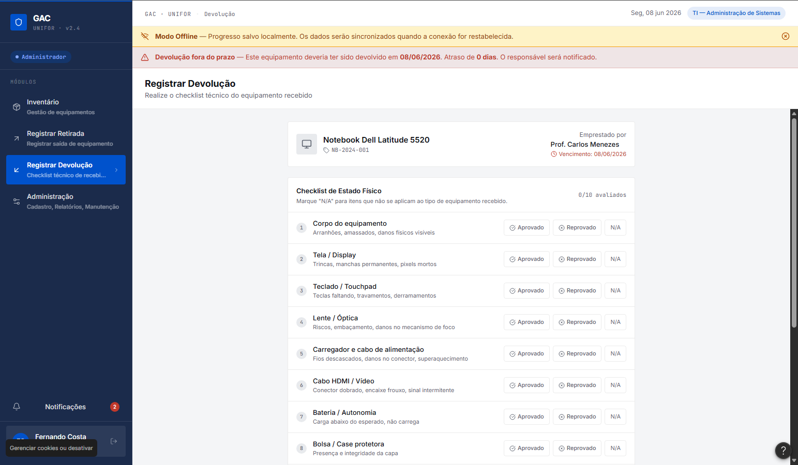
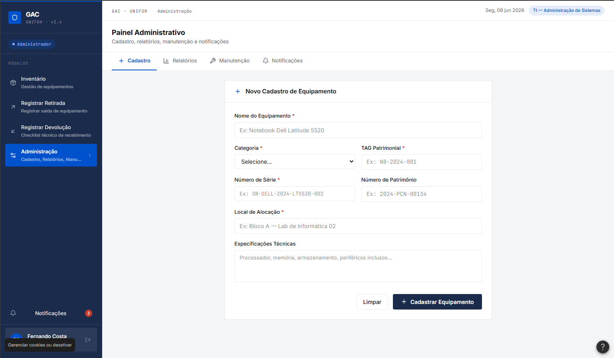

Plataforma digital integrada a identificadores físicos para controle e rastreabilidade de equipamentos.
O CCT disponibiliza projetores, chaves e outros equipamentos essenciais para as aulas, mas o fluxo operacional atual é fortemente impactado por gargalos manuais e pela ausência de uma centralização digitalizada de informações.
Processo de empréstimo e devolução baseado em registros em papel e anotações suscetíveis a erros.
Fluxos informais de transferência de posse de itens sem qualquer histórico ou registro formal.
Obstáculo constante para localizar e saber quem é o responsável atual por um determinado ativo circulante.
Total ausência de registros padronizados quanto às condições físicas e integridade dos itens retirados.
Alta vulnerabilidade a extravios de hardware e acessórios sem uma responsabilização clara e inequívoca.
Excesso de retrabalho e esforço burocrático manual concentrado sobre os funcionários da recepção do CCT.
Descrição: Docente que necessita rotineiramente de projetores, adaptadores e chaves para conduzir suas aulas.
Necessidade: Retirar e devolver equipamentos de forma ágil, prática e transparente diretamente através de seu smartphone.
Usuário FinalDescrição: Funcionário responsável pelo atendimento na recepção e suporte logístico dos materiais.
Necessidade: Controlar o inventário em tempo real, mitigando erros operacionais e eliminando filas no balcão.
Operador / AdminDescrição: Perfil de gestão responsável pelo patrimônio, integridade dos ativos e governança do CCT.
Necessidade: Visibilidade consolidada sobre o ciclo de vida dos ativos, relatórios analíticos de uso e histórico de movimentações.
Gestor / PatrocinadorDescrição: Sistemas internos e corpo discente indiretamente impactados pela governança dos materiais.
Necessidade: Garantia de disponibilidade, conservação dos recursos em sala de aula e alinhamento de dados corporativos.
Beneficiado IndiretoO GAC estabelece uma plataforma digital centralizada com fluxos bem definidos, interligada a tags físicas nos equipamentos para automatizar as rotinas de movimentação patrimonial e checkouts rápidos.
Tecnologia: Plataforma híbrida composta por Interface Mobile (Android/iOS) e Dashboard Web/Desktop.
Autenticação: Login institucional integrado para professores, funcionários e gestores.
Rastreabilidade: Vinculação física imediata através de tecnologias de aproximação NFC e/ou escaneamento de QR Code.
Escalabilidade: Arquitetura preparada para expansão do catálogo de itens e inclusão de novos blocos ou centros.
Integrações: Previsão de comunicação via módulos com os ecossistemas e bases de dados de TI da instituição.
Identificação instantânea do item por NFC ou QR Code, consulta em tempo real da disponibilidade e formalização por meio de assinatura e aceite digital do Termo de Responsabilidade.
Conferência guiada de acessórios acoplados (cabos, controles) e estado físico geral do hardware, permitindo registro fotográfico de avarias antes de liberar o status do ativo de volta para 'disponível'.
Painel administrativo para inclusão detalhada de novos ativos (marca, modelo, número de série), agendamento preventivo de manutenções e auditoria retroativa completa de empréstimos.
Disparo de lembretes automáticos de prazos de devolução expirando para professores, avisos de atraso crítico para a coordenação e relatórios de métricas para suporte à tomada de decisões.
O escopo atual foca na modelagem detalhada dos requisitos, casos de uso e prototipação das interfaces complementares previstas na arquitetura da demanda.

Módulo focado na exibição dos ítens existentes.

Módulo compacto focado no escaneamento de etiquetas NFC/QR Code, visualização de termos e status rápido de posse do item.

Interface desktop otimizada para recepção, exibindo fila de pendências, execução de checklists de devolução e consulta rápida ao inventário.

Módulo de administração profunda com filtros de cadastrar equipamento, relatórios, manutenção e notificações.
A especificação do projeto de extensão compreende a engenharia de software reversa e direta mapeada através dos seguintes diagramas:
Retirada imediata direto no balcão sem burocracias de assinaturas físicas em livros manuais.
Garantia de baixa automática de responsabilidade sobre o ativo assim que o checklist técnico é fechado.
Redução drástica do sumiço de adaptadores e controles através da amarração rigorosa da posse do item.
Acompanhamento sistêmico da saúde do hardware, minimizando surpresas de mau funcionamento em plena aula.
Patrimônio Protegido: Transparência absoluta na gestão e preservação do ecossistema físico e tecnológico de suporte acadêmico.
Eficiência de Processos: Substituição total de fluxos informais ou baseados em papéis por fluxogramas digitais auditáveis.